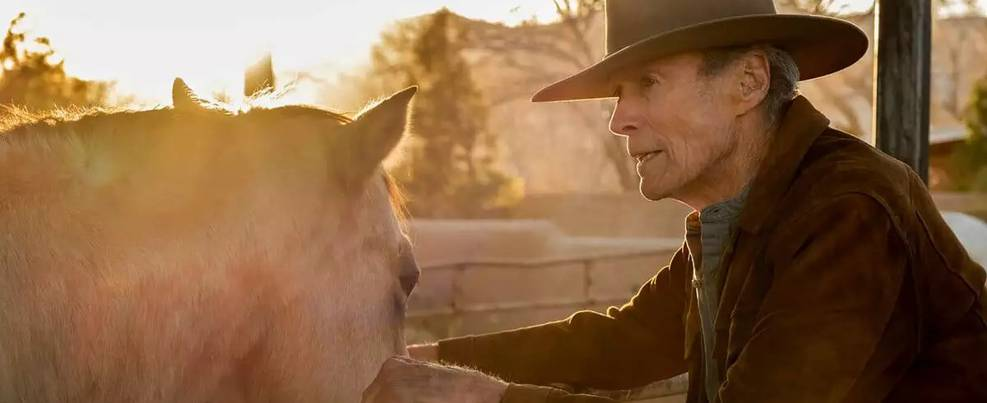
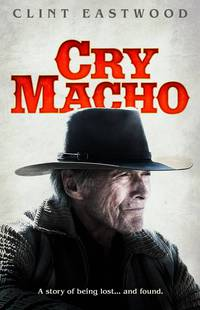

 Créditos da imagem: WarnerBros/Divulgação/Internet Clint Eastwood acerta as contas com sua história em Cry Macho Diretor volta a viver caubói em falso filme de escapada Creditos da internet considerar apenas para visualização. Atualizada em 17.09.2021 às 00h16
 Cry Macho - O Caminho para Redenção Ano: 2021 País: EUA Classificação: 14 anos Duração: 104 min Direção: Clint Eastwood Roteiro: N. Richard Nash, Nick Schenk Elenco: Natalia Traven, Dwight Yoakam, Eduardo Minett, Horacio Garcia Rojas, Clint Eastwood